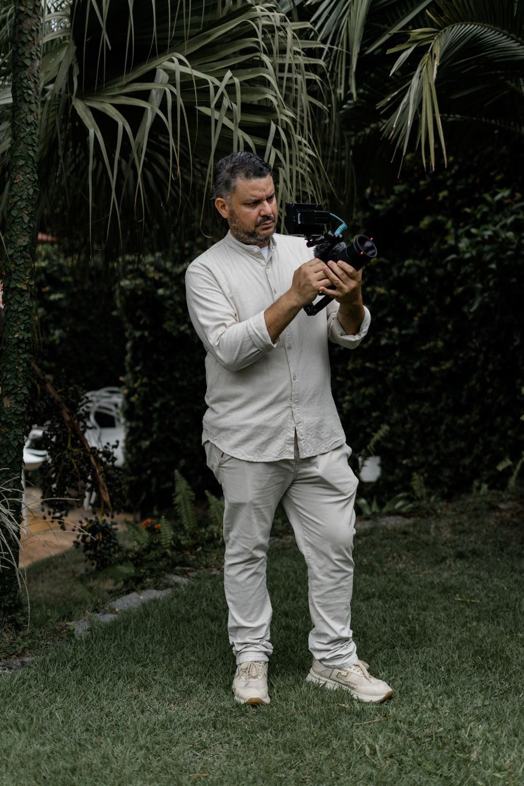
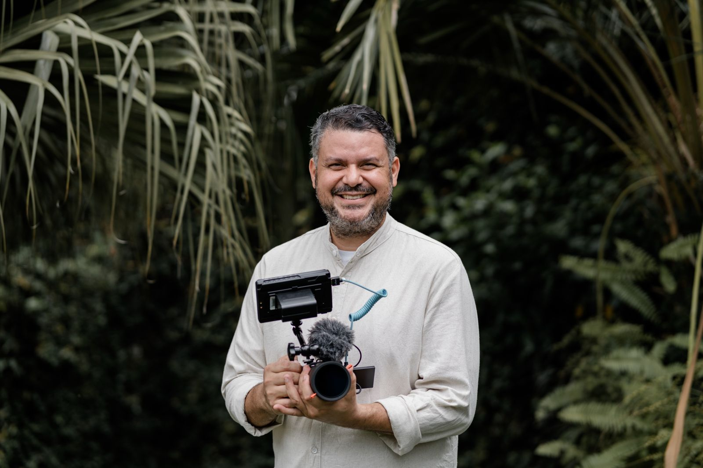

Quem está atrás da câmera.
A V.REC é uma produtora audiovisual de Porto Seguro. A gente observa o que acontece de verdade e usa a linguagem do cinema para transformar isso em filme.

A fotografia congela um instante. O filme devolve o movimento, a voz e o tempo.
A V.REC nasceu dentro do mesmo universo da Camilla Vitor Fotografia. Foi ali, olhando casamentos pela fotografia, que ficou claro que existiam coisas que uma imagem parada não conseguia guardar: a voz no voto, o vento, a risada fora de cena, o silêncio antes da entrada.
Por isso a V.REC existe como marca própria. As duas são marcas irmãs: dividem valores, conhecem bem os casais e trabalham juntas quando são contratadas juntas. Mas cada uma tem a sua linguagem.
A V.REC foi criada por Camilla e Júnior, que também vivem uma história a dois. Talvez por isso a gente preste tanta atenção nos pequenos gestos entre duas pessoas.

Documental no jeito de observar. Cinema no jeito de contar.
Durante o que acontece de forma espontânea, a gente observa. Quando algo precisa de organização, a gente orienta. Nos momentos mais importantes, a gente não interrompe.
A câmera está presente, mas não é a protagonista. Para parecer natural, muitas vezes existe bastante trabalho acontecendo atrás dela: luz, áudio, posição, tempo.
Verdade
Não transformar o dia em algo que ele não foi.
Intenção
Cada movimento, corte e música tem um motivo.
Som
Votos, vento, mar e risadas também contam a história.
Permanência
Filmes que continuam fazendo sentido daqui a muitos anos.
Porto Seguro, Arraial d'Ajuda, Trancoso e a Costa do Descobrimento.
A gente trabalha onde mora. Conhece a luz de fim de tarde que muda rápido em Arraial, o vento da praia, as distâncias entre um lugar e outro e a logística de quem vem casar de longe.
Além dos casamentos, a V.REC também produz para marcas, empresas, profissionais de saúde e eventos, com o mesmo cuidado com a história.
Não queremos apenas mostrar como aconteceu. Queremos fazer você sentir novamente.
Vamos conversar sobre o seu projeto?
Um casamento, um filme de casal, um vídeo para a sua empresa ou um evento. Conta pra gente como você imagina.